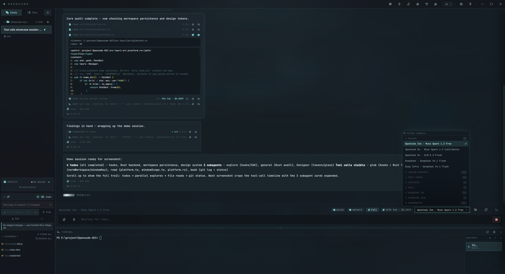

A thin GUI for opencode
Tauri + React sidecar client — no fork, all agent logic reused from the server.
v2.2.5

Why a GUI
Same opencode server, friendlier shell around it.
▣Server reuse
Spawns opencode serve as a sidecar and talks HTTP/SSE. No forked agent logic.
⧉Workspaces
Up to 5 directories plus ssh:// remote hosts, each with its own session stream.
◈Glass chrome
Acrylic on Win11, vibrancy on macOS, opaque fallback on Linux. Square flush panels.
✦Permissions
Approve / deny tool calls inline, abort mid-stream, revert with one click.
❖Editor + terminal
Monaco diffs, xterm dock, git panel, file watcher, voice control via plugins.
⬣Portable
Portable zips ship exe + sidecar + relay. No admin install required.
Downloads
Links resolve from the latest GitHub release automatically. Offline? Browse all releases →
Windows x64
Loading latest release…
macOS arm64
Loading latest release…
Linux
Loading latest release…
Next steps
→Install guide
Portable zips, Gatekeeper, Linux deps. Read install →
→Changelog
Latest 20 releases with per-asset links. Read changelog →
→Source
Tauri v2 + React 19 + TypeScript. Open repo →